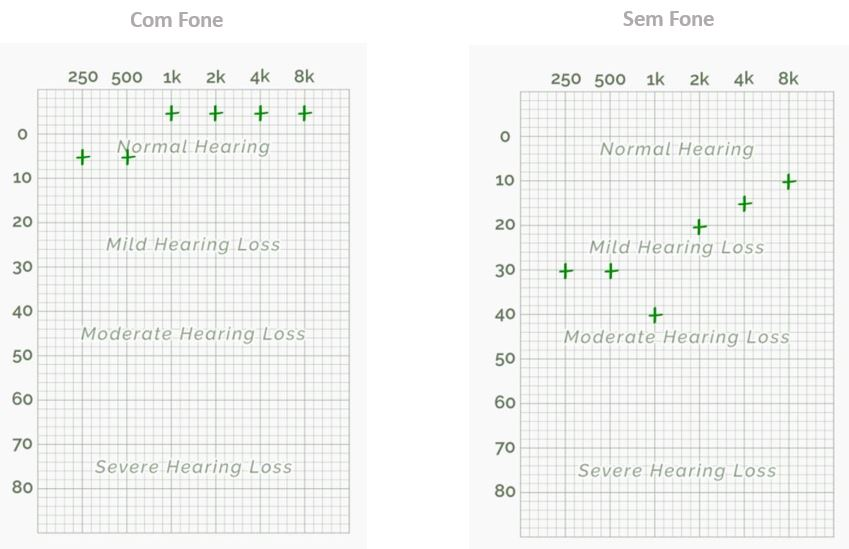
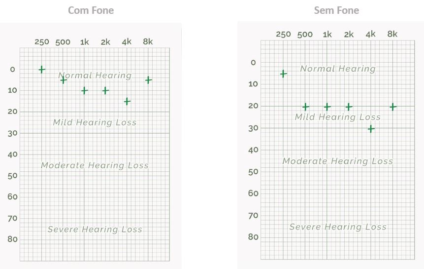
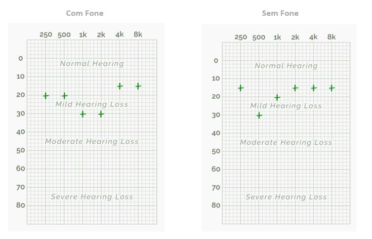
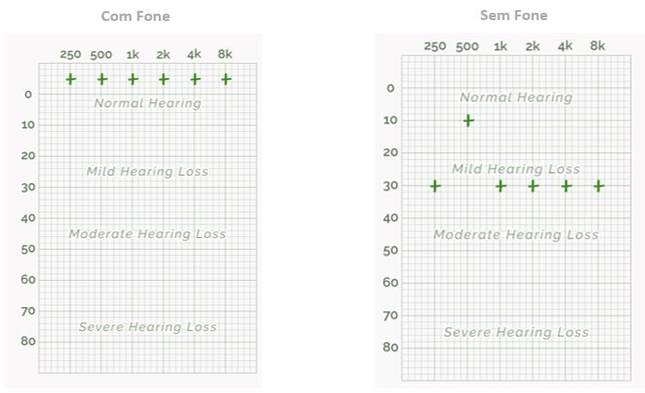
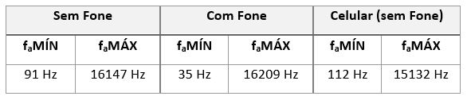
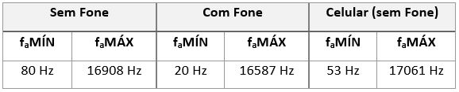
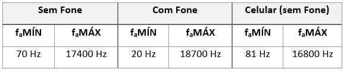
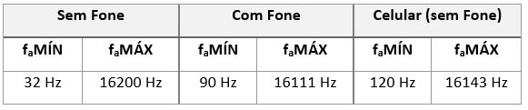
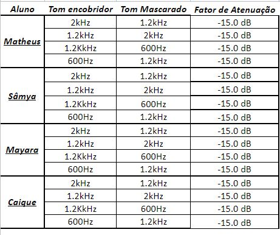

Percepção Auditiva
Codificação de Sinais Multimídia - Laboratório 5
Primeiramente, os trabalhos com o Google Colab e o OpenCV, Notebook foram iniciados. Entre os principais objetivos temos: Constatar as características psicoacústicas de pessoas distintas de sensibilidade à intensidade, banda audível e mascaramento harmônico.
Teste de Audiometria
Para gerar os resultados que serão apresentados nesta seção, um teste de audição online foi realizado por todos os integrantes do grupo. Dependendo da frequência do sinal, os diferentes testes de sensibilidade realizados percorrem qual o nível de audição que nosso Sistema Auditivo capta. Como passo inicial, utilizando o áudio do computador, os níveis de som foram calibrados. Em seguida, obtivemos o padrão audiométrico para ambas orelhas (com e sem o fone de ouvido).
Matheus

O padrão audiométrico utilizando o fone de ouvido teve pequenas variações dentro da região de audição normal, sendo que as frequências mais baixas 250 e 500 Hz ficaram na região entre 0 e 10 enquanto o restante em 0. Isso pode ter ocorrido pois as frequências mais baixas são naturalmente mais difíceis de se perceber, e o isolamento do fone e nível de silêncio do ambiente interferem significativamente. No teste sem o fone de ouvido houve uma variação maior onde as baixas frequências, até 1 KHz ficaram entre 30 e 40, enquanto as altas frequências, a partir de 2 KHz variaram entre 10 e 20. No teste sem o fone de ouvido percebemos que as ondas sonoras quando emitidas no ambiente, sem nenhum tipo de isolamento proporcionado por fones de ouvido, se dispersam e a percepção auditiva é menor devido aos ruídos que naturalmente estão presentes no ambiente.
Mayara

O padrão audiométrico encontrado ao utilizar o fone de ouvido nos testes, permaneceu localizado na região de audição normal. Por sua vez, ao realizar o teste sem o fone, o resultado (em sua maioria) se mostrou diferente, apontando para uma situação de perda auditiva leve. Entre as justificativas encontradas, um dos principais motivos é o impacto do uso dos fones de ouvido, que abafaram e permitiram certo isolamento dos ruídos presentes no ambiente, assim como, diferença na intensidade.
Caíque

As frequências testadas se apresentam entre “audição normal” e “perda auditiva leve”. Os resultados com e sem o uso do fone divergem ligeiramente talvez porque o teste foi tomado em um ambiente não controlado, pelas diferenças de calibração (não há especificações para a calibração sem o uso de fones de ouvido), pelas diferenças de hardware entre os alto-falantes do computador e do fone, assim como a diferença de caminho que as ondas sonoras tomam para chegar aos tímpanos para as diferentes situações.
Sâmya

As frequências apresentadas durante o teste de audiometria ficaram entre " audição normal" e " perda auditiva leve" tanto para o teste realizado com o uso de fone quanto para o teste realizado sem o uso de fone.
---------------------------------------
Online Hearing Test
---------------------------------------
Teste de Faixa Audível
Utilizando inicialmente, o áudio do computador, assim como temos variabilidade na faixa de frequência à qual nosso sistema auditivo é perceptivo, ao acessar o vídeo "Hearing Test HD", leia as instruções de ajuste de volume e anote as frequências dada as seguintes situações:
-------------------------------------------------------------------
a) Sem os fones de ouvido, anote a frequência mínima audível e a frequência máxima;
b) Apesar do nível do sinal ser sempre o mesmo, as frequências em que lhe parecer que o som é muito baixo e, também, onde parece que ele sobe mais;
c) Repetir o procedimento com um fone de ouvido;
d) Repetir o procedimento com o seu aparelho celular, sem fone de ouvido.
-------------------------------------------------------------------
Matheus

Neste teste, novamente temos diferentes resultados onde o fone de ouvido proporcionou uma percepção auditiva de faixas de frequência maiores, novamente isso ocorre pois a emissão dos sons é efetuada de maneira próxima ao aparelho auditivo e com certo isolamento. Ao observarmos os testes sem fone pelos alto falantes do computador e do celular, percebemos também que a faixa de percepção utilizando o celular é menor, isso pode estar relacionado a qualidade dos alto falantes do aparelho, uma vez que o celular é um dispositivo compacto e cujo a proposta não é a reprodução de sons sem isolamento, logo a sensibilidade do emissor é um fator preponderante para identificação dos sons.
Mayara

As diferenças podem ocorrer devido ao abafamento com o ambiente externo (uso dos fones) - como apontado no teste feito anteriormente. Além disso, apesar do nível do sinal ser sempre o mesmo, as frequências em que o som me parece muito baixo, são as que se encontram abaixo de 200 Hz. Do mesmo modo, quando a frequência está acima de 5400 Hz o som aparenta subir, mas quando acima de 9000 Hz, “o som diminui" consideravelmente.
Caíque

Nesse teste a calibração não ficou muito clara, o que afeta significativamente a faixa audível para cada componente. Os resultados com o uso de fones são os melhores, mas isso é esperado visto que as ondas sonoras sofrem menos distorções para atingir os tímpanos. Há uma diferença maior entre as frequências máximas, em comparação com as frequências mínimas, talvez porque sons em altas frequências se dissipam no ar mais rapidamente do que sons em baixa frequência. Senti uma sensibilidade acentuada para sons entre 2500 Hz e 7000 Hz. Entre 7000 Hz e 10000 Hz o som aparenta ser um pouco mais suave. Mas entre 10000 Hz e 11500 Hz, ele retoma seu aspecto lancinante.
Sâmya

As diferenças entre as frequências destacadas entre o uso de fone e sem foram consideráveis, enquanto a faixa audível sem fone se manteve majoritariamente entre " perda leve de audição", a faixa audível " com fone" se manteve normal ao longo de todo o teste.
---------------------------------------
YouTube - Hearing Test HD
---------------------------------------
Teste de Mascaramento de Tons Harmônicos
Nesta seção, cada integrante poderia optar por utilizar o som do computador ou os fones. Com o auxílio do notebook fornecido para o Colab, procuramos o limiar de atenuação de dois harmônicos, em passos de atenuação de 3dB.
Fator de Atenuação para cada integrante:

Para este teste, percebe-se que para todos os integrantes o limiar de atenuação de dois harmônicos (nas variadas situações) foram iguais, apresentando um fator de -15.0 dB
Recomendação: ReSound
Nas seções anteriores, alguns testes foram realizados e agora, recomendamos outro disponível online e gratuitamente. Para isso, basta acessar o link a seguir que direciona ao site ReSound. Resumidamente, esse teste de audição irá ajudar o indivíduo a identificar suas dificuldades na compreensão da fala em um ambiente ruidoso.
Inicialmente, o usuário irá ouvir diferentes combinações de palavras e depois números (sempre em grupos de três). Enquanto isso, o barulho/ruído de fundo também será alterado. Em sequência, será necessário selecionar as três coisas ouvidas clicando nos ícones correspondentes ou nos números mostrados. Além disso, se você se distrair e perder alguma palavra, é possível apertar um botão para repetir.
Atenção: É importante ressaltar, que o teste de audição online da ReSound não substitui uma consulta com um fonoaudiólogo e não é válido como um diagnóstico
---------------------------------------
ReSound - Teste de Audição
---------------------------------------
Percepção Psicoacústica
Aqui, apresentaremos o "Estudo de viabilidade técnica sobre os usos de fontes artificiais de água para o mascaramento de ruído urbano" (2019. MARTINS, L.). Este foi baseado em uma tese de doutorado da Escócia, que estudou os sons produzidos por diversos tipos de água. Além disso, as diferentes fontes foram analisadas (tendo-se em vista, critérios psicoacústicos), para que assim, a comparação fosse feita.
Resumidamente, com todas as avaliações realizadas, foi possível classificar como satisfatório o uso de fontes de água para o mascaramento, isto, quando utilizado/aplicado parâmetros certos para cada situação.
Para encontrar o estudo completo, acesse o link:
---------------------------------------
Estudo de Percepção Psicoacústica
---------------------------------------